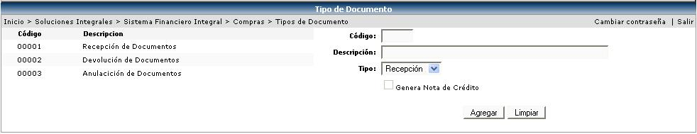

Los tipos de documentos que aquí se definan van a asociar cuando se registre la recepción y / o devolución de mercadería. Se le asocia un tipo (Recepción/Devolución) y si es uno de tipo Devolución se habilitará el check “Genera nota de crédito” para el registro en cuentas por pagar.
